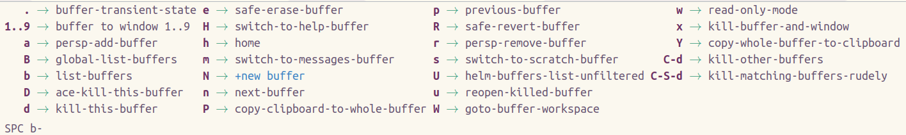

Vim Quick Reference
A reference of the most common keybindings available in Vim Normal mode.
. repeats the last keybinding sequence used in Vim Normal mode or a change made within a complete Vim Insert session.
Moving around
In normal mode you can keep your fingers resting on the main row of your keyboard to move around.
| keybinding | action |
|---|---|
j |
move cursor down one line |
k |
move cursor up one line |
l |
move cursor right one character |
h |
move cursor left one character |
In menus such as helm you can move around using Ctrl and these keybindings. So C-j will move the cursor down one item in a menu.
Navigating the current line
| Command | Action |
|---|---|
f |
to next character (you specify) |
t |
to just before the next character |
w |
start of next word |
W |
start of next word, white space delimited |
e |
end of current word |
b |
start of previous word |
W |
end of next word, white space delimited |
* |
to next matching symbol name |
$ |
end of current line |
0 |
start of current line |
^ |
start of non-whitespace |
% |
jump to matching parens or next closed paren |
Navigating the current buffer
| keybinding | action |
|---|---|
gg |
start of buffer |
G |
end of buffer |
H |
move cursor to head of buffer |
M |
move cusror to middle of buffer |
L |
move cursor to bottom line of buffer |
C-u |
jump up half a page |
C-d |
jump down half a page |
} |
move cursor forward by paragraph or block |
{ |
move cursor backward by paragraph or block |
ma |
mark a line in a file with marker "a" |
`a |
after moving around, go back to the exact position of marker "a" |
'a |
after moving around, go back to line of marker "a" |
:marks |
view all the marks |
'' |
go to the last place you were |
[{ |
jump back to the "{" at the beginning of the current code block |
SPC j i |
avy-jump to character (specify) |
SPC j j |
avy-jump to character (specify) |
SPC j l |
jump using helm list of headings / functions |
: 4 |
go to line 4 |
Searching
Search a buffer for characters or words / text pattern.
| Command | Action |
|---|---|
* |
search forwards for the word under the cursor |
# |
search backwards for the word under the cursor |
/ |
search forwards in current buffer |
? |
search backwards in current buffer |
n |
once searching: find forward |
N |
once searching: find backwards |
Searching tips
Search will wrap around a buffer when it reaches the end
Use SPC / for a project wide search.
Additional search commands are available under SPC s, including the powerful iedit mode, SPC s e which provides features like multiple cursors.
Text Editing
The following commands put you into the Evil Insert state
| Command | Action |
|---|---|
i |
edit at cursor |
a |
append - edit after cursor |
o |
new line after cursor |
O |
new line before cursor |
Return to Normal state
Regularly switch between normal and insert states is normal practice in Spacemacs. As soon as you finish typing some new text, it should become second nature to go back to normal state.
Switching from insert to normal state:
ESC or press f d keys in extremely quick succession.
Hint
Using f d together is low risk as if you dont get it right it will either add the characters or try find the next d character (as f moves to the next character).
Keep trying this key combination as once in normal state you can use u to undo any f d characters inserted.
The character sequence can be customized or deactivated by adding evil-escape to dotspacemacs-excluded-packages in the ~/.spacemacs configuration file.
Cut, paste, undo, redo
| Command | Action |
|---|---|
x |
delete character and add to kill ring |
p |
paste (put) |
u |
undo |
Ctrl-r |
redo |
Undo tips
Undo will revert the last action in normal mode or all the changes you made in insert state
Replace and changing text
| Command | Action |
|---|---|
r |
replace the character under cursor |
R |
replace multiple characters until ESC |
cw |
change word from cursor to end |
4 c w |
change 4 words |
v (select) c |
change region |
SPC v c |
change current word/region |
SPC v d |
delete current word/region |
d w |
delete from cursor to end of word |
C |
change from cursor to end of line |
D |
delete from cursor to end of line |
d $ |
delete from cursor to end of line |
Combine d | c | v | r with avy-goto
Delete commands
| Command | Action |
|---|---|
de |
delete to end of word, not including space |
dw |
delete to end of word, including space |
d$ |
delete to end of line |
dd |
delete the current line |
4 d w |
delete 4 words |
4 d $ |
delete 4 lines to end |
dt |
delete to a character (not including character) |
dab |
delete a whole block / expression |
dib |
delete contents of a block / expression |
cab |
change all the block / expression |
cib |
change inner block contents / expression |
yab |
yank all block / expression |
yib |
yank inner block contents / expression |
Repeat commands
| Command | Action |
|---|---|
. |
repeat last command again |
<number> <cmd> |
repeat command a number of times |
The . keybinding will repeat the last command in normal mode or the last text edit in insert mode.
Type a number before a command and that command will run that number of times.
Inserting a comment border
Use the number repeat to create a border of 42 ; characters.
Type 42 to repeat the command 42 times
Press i for insert mode
Press ; as the character to repeat insert
Press ESC or fd to leave insert mode and insert all 42 ; characters
Quit or Restart Emacs
I recommend using the Spacemacs menu from normal mode to quit / restart Spacemacs.
| Command | Action |
|---|---|
SPC q q |
Quit Spacemacs |
SPS q r |
Restart Spacemacs keeping current window and buffer layout |
SPS q R |
Restart Spacemacs |
Editing
X - delete char before cursor
A - add to end of line
I - insert at the beginning of the line
dd - delete line
D - delete from cursor to end of line
di' - delete text inside single quotes
yy - copy line
Y - copy from cursor to end of line
cc - change line
C - change from cursor to end of line
cit - change text inside html tag
ci' - change text inside single quotes
ci{ - change text inside curly brackets.
ci... - etc
p - paste after cursor
P = paste before cursor
o - add line below
O - add line above
. = repeat last comment
r - replace character
R - replace. (overwrite) (good for columns of text)
J - join line (cursor can be anywhere on line)
visual state
v - visual char state
V - visual line state
C-v - block visual state
Classic Vim commands
Reference section
The classic vim commands are also available, however, I dont think they are as nice to learn. Adding as reference for those used to Vim already and would miss them.
Substitution
| Command | Action |
|---|---|
:s/old/new |
substitute new for the first old pattern |
:s/old/new/g |
substitute new for all 'old's on a line |
:#,#s/old/new/g |
substitute phrases between two line #'s type |
:%s/old/new/g |
substitute all occurrences in the file |
:%s/old/new/gc |
as above, asking for confirmation each time |
External commands
You can run external commands using :! followed by a command. For example:
:!ls - run the ls command
Spacemacs shell can be configured to pop-up a shell buffer to run commands from the directory of the current buffer.
Useful Vim key bindings
Manipulating words
| Spacemacs | Major mode | Emacs | Evil | Command | Description |
|---|---|---|---|---|---|
C-t |
x p |
Transpose characters | |||
M-c |
Capitalise word | ||||
M-l |
Lowercase word (no keybinding in Spacemacs) | ||||
M-u |
Uppercase word |
Escaping Insert state and commands
Typing quickly fd takes me out of insert state. What is going on?
This is a feature of Spacemacs, enabling you to easily escape from a lot of situations, like escaping from insert state to normal state.
The sequence of characters used can be customized. See the documentation for more information.
If you don't like this feature, you can Deactivate it by adding evil-escape to dotspacemacs-excluded-packages in your init file.
Selecting
You can select text from Vim normal state by entering the visual state
| Spacemacs | Major mode | Emacs | Evil normal | Command | Description |
|---|---|---|---|---|---|
C-SPC |
v |
Toggle visual mode / selection |
Add comment / Toggle comment
In Vim normal mode you can comment out a single line using g c c.
To comment multiple lines you can use the repeat command style, especially if you are using relative line numbers. So using g c 3 j will comment out the current line and the following two lines below. You can comment out in reverse using g c 3 k.
In Visual state, v, select the lines you wish to comment and use g c to comment all the marked lines. Partially marked lines are not commented.
| Spacemacs | Visual State | Emacs | Evil Normal | Command | Description |
|---|---|---|---|---|---|
g c |
M-; |
Comment marked region | |||
g c c |
Comment line | ||||
g c 5 j |
Comment 5 lines forward from current | ||||
g c 5 k |
Comment 5 lines backward from current |
http://spacemacs.org/layers/+vim/evil-commentary/README.html
Spelling
As you are typing in any(?) buffer then Spacemacs is checking your spelling as you type. If you type a word that Spacemacs does not recognise then that word is underscored in red. To correct a spelling:
- Move to the word that is incorrectly spelt
SPC S cto change the word and show a list of suggested words- Either type in a new spelling or use
C-jandC-kkeys to move down and back up the list of words, usingRETto select that word.
Scrolling
in vim command mode you can scroll just the text using the classic vi bindings. This does not scroll the cursor unless the cursor hist the top or bottom of the window, in which case the cursor stays at that window boundry.
C-y - scroll down
C-e - scroll text up
Inserting a character multiple times
In Vim normal mode (yellow) type the number of times to repeat the character followed immediately followed by i, then the character or word you want to reapeat. Then press ESC or fd and the character will be printed repeatedly
redrum redrum redrum redrum redrum redrum redrum redrum redrum redrum
jump around...
SPC j i shows imenu that lists all the def and defn expressions in the current buffer, allowing you to jump to one of these definitions directly by typing its name or using C-j and C-k to select the name and pressing RET to jump to the name in the buffer
SPC j l labels each line of the buffer with a short, unique character code. By entering the character code you are taken directly to the specific line. This is the avy goto line function and this works on all visible buffers by default, although it can be just shown on the current buffer (TODO: how is this set).
searching
search with SPc /
Matching only within a boundary by wrapping your search term with \b.
So if you want to match or and not word, then you would do
SPC / \bor\b
getting stuff done - vim basics
http://paul-gowder.com/emacs.html
changing escape sequence for vim
(setq evil-escape-key-sequence "jk")
Working with Buffers
To work with files in Emacs, they are first loaded into a Buffer.
So when you open a file with M-x find file or SPC f f a new buffer is created so you can manage that file.
Buffers are displayed in a window and you can change the window to show any of the current buffers.
Here are the most commonly used buffer commands
| Keybinding | Command | Description |
|---|---|---|
SPC b b |
helm-mini | List current buffers |
SPC b d |
kill-this-buffer | Kill current buffer |
SPC b h |
home | Switch to Spacemacs home page |
SPC b n |
next-buffer | Switch to next buffer |
SPC b p |
previous-buffer | Switch to previous buffer |
SPC b s |
switch-to-scratch-buffer | Switch to the scratch buffer |
SPC b Y |
copy-whole-buffer-to-clipboard | Copy current buffer contents to kill ring |
See the full buffer menu via SPC b

Managing Files
| Spacemacs | Emacs | Evil | Command |
|---|---|---|---|
SPC f R |
M-m f R |
, f R |
rename-current-buffer-file |
Also consider using:
- dird
- neotree
- projectile
Editing text (especially in Evil mode)
See Vim section
Working with Windows
| Keybinding | Command | Description |
|---|---|---|
C-x 1 |
Close current window | |
C-x 2 |
Vertically split current window | |
C-x 3 |
Horizontally split current window | |
SPC number |
Jump to window number |
You can also create layouts that are a collection of windows
Useful Spacemacs commands
SPC w / - split window vertically SPC w - - split window horizontally SPC 1 - switch to window 1 SPC 2 - switch to window 2 SPC w c - delete current window SPC TAB - switch to previous buffer SPC b b - switch buffers SPC f f - find a file SPC f s - save a file (:w also works) SPC p p - open project SPC p h - find a file in current project SPC b d - kill current buffer SPC b M - move buffer to another window SPC v - enter expand-region state